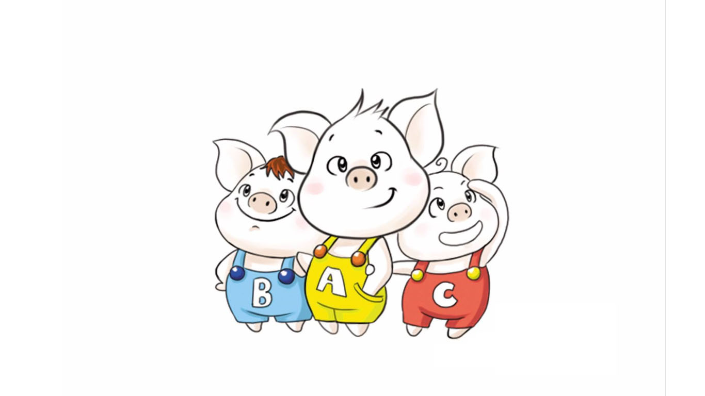

1 C++初识
1.1 第一个C++程序
编写一个C++程序总共分为4个步骤
- 创建项目
- 创建文件
- 编写代码
- 运行程序
1.1.1 创建项目
Visual Studio是我们用来编写C++程序的主要工具，我们先将它打开


1.1.2 创建文件
右键源文件，选择添加->新建项

给C++文件起个名称，然后点击添加即可。

1.1.3 编写代码
xusing namespace std;int main() { cout << "Hello world" << endl; system("pause"); return 0;}1.1.4 运行程序

1.2 注释
作用：在代码中加一些说明和解释，方便自己或其他程序员程序员阅读代码
两种格式
单行注释：
// 描述信息- 通常放在一行代码的上方，或者一条语句的末尾，对该行代码说明
多行注释：
/* 描述信息 */- 通常放在一段代码的上方，对该段代码做整体说明
提示：编译器在编译代码时，会忽略注释的内容
1.3 变量
作用：给一段指定的内存空间起名，方便操作这段内存
语法：数据类型 变量名 = 初始值;
示例：
xxxxxxxxxxusing namespace std;int main() { //变量的定义 //语法：数据类型 变量名 = 初始值 int a = 10; cout << "a = " << a << endl; system("pause"); return 0;}
注意：C++在创建变量时，必须给变量一个初始值，否则会报错
1.4 常量
作用：用于记录程序中不可更改的数据
C++定义常量两种方式
#define 宏常量：
#define 常量名 常量值- 通常在文件上方定义，表示一个常量
const修饰的变量
const 数据类型 常量名 = 常量值- 通常在变量定义前加关键字const，修饰该变量为常量，不可修改
示例：
xxxxxxxxxx//1、宏常量int main() { cout << "一周里总共有 " << day << " 天" << endl; //day = 8; //报错，宏常量不可以修改 //2、const修饰变量 const int month = 12; cout << "一年里总共有 " << month << " 个月份" << endl; //month = 24; //报错，常量是不可以修改的 system("pause"); return 0;}
1.5 关键字
作用：关键字是C++中预先保留的单词（标识符）
- 在定义变量或者常量时候，不要用关键字
C++关键字如下：
| asm | do | if | return | typedef |
|---|---|---|---|---|
| auto | double | inline | short | typeid |
| bool | dynamic_cast | int | signed | typename |
| break | else | long | sizeof | union |
| case | enum | mutable | static | unsigned |
| catch | explicit | namespace | static_cast | using |
| char | export | new | struct | virtual |
| class | extern | operator | switch | void |
| const | false | private | template | volatile |
| const_cast | float | protected | this | wchar_t |
| continue | for | public | throw | while |
| default | friend | register | true | |
| delete | goto | reinterpret_cast | try |
提示：在给变量或者常量起名称时候，不要用C++得关键字，否则会产生歧义。
1.6 标识符命名规则
作用：C++规定给标识符（变量、常量）命名时，有一套自己的规则
- 标识符不能是关键字
- 标识符只能由字母、数字、下划线组成
- 第一个字符必须为字母或下划线
- 标识符中字母区分大小写
建议：给标识符命名时，争取做到见名知意的效果，方便自己和他人的阅读
2 数据类型
C++规定在创建一个变量或者常量时，必须要指定出相应的数据类型，否则无法给变量分配内存
2.1 整型
作用：整型变量表示的是整数类型的数据
C++中能够表示整型的类型有以下几种方式，区别在于所占内存空间不同：
| 数据类型 | 占用空间 | 取值范围 |
|---|---|---|
| short(短整型) | 2字节 | (-2^15 ~ 2^15-1) |
| int(整型) | 4字节 | (-2^31 ~ 2^31-1) |
| long(长整形) | Windows为4字节，Linux为4字节(32位)，8字节(64位) | (-2^31 ~ 2^31-1) |
| long long(长长整形) | 8字节 | (-2^63 ~ 2^63-1) |
2.2 sizeof关键字
作用：利用sizeof关键字可以统计数据类型所占内存大小
语法： sizeof( 数据类型 / 变量)
示例：
xxxxxxxxxxint main() { cout << "short 类型所占内存空间为： " << sizeof(short) << endl; cout << "int 类型所占内存空间为： " << sizeof(int) << endl; cout << "long 类型所占内存空间为： " << sizeof(long) << endl; cout << "long long 类型所占内存空间为： " << sizeof(long long) << endl; system("pause"); return 0;}
整型结论：short < int <= long <= long long
2.3 实型（浮点型）
作用：用于表示小数
浮点型变量分为两种：
- 单精度float
- 双精度double
两者的区别在于表示的有效数字范围不同。
| 数据类型 | 占用空间 | 有效数字范围 |
|---|---|---|
| float | 4字节 | 7位有效数字 |
| double | 8字节 | 15～16位有效数字 |
示例：
xxxxxxxxxxint main() { float f1 = 3.14f; double d1 = 3.14; cout << f1 << endl; cout << d1<< endl; cout << "float sizeof = " << sizeof(f1) << endl; cout << "double sizeof = " << sizeof(d1) << endl; //科学计数法 float f2 = 3e2; // 3 * 10 ^ 2 cout << "f2 = " << f2 << endl; float f3 = 3e-2; // 3 * 0.1 ^ 2 cout << "f3 = " << f3 << endl; system("pause"); return 0;}
2.4 字符型
作用：字符型变量用于显示单个字符
语法：char ch = 'a';
注意1：在显示字符型变量时，用单引号将字符括起来，不要用双引号
注意2：单引号内只能有一个字符，不可以是字符串
- C和C++中字符型变量只占用1个字节。
- 字符型变量并不是把字符本身放到内存中存储，而是将对应的ASCII编码放入到存储单元
示例：
xxxxxxxxxxint main() { char ch = 'a'; cout << ch << endl; cout << sizeof(char) << endl; //ch = "abcde"; //错误，不可以用双引号 //ch = 'abcde'; //错误，单引号内只能引用一个字符 cout << (int)ch << endl; //查看字符a对应的ASCII码 ch = 97; //可以直接用ASCII给字符型变量赋值 cout << ch << endl; system("pause"); return 0;}ASCII码表格：
| ASCII值 | 控制字符 | ASCII值 | 字符 | ASCII值 | 字符 | ASCII值 | 字符 |
|---|---|---|---|---|---|---|---|
| 0 | NUT | 32 | (space) | 64 | @ | 96 | 、 |
| 1 | SOH | 33 | ! | 65 | A | 97 | a |
| 2 | STX | 34 | " | 66 | B | 98 | b |
| 3 | ETX | 35 | # | 67 | C | 99 | c |
| 4 | EOT | 36 | $ | 68 | D | 100 | d |
| 5 | ENQ | 37 | % | 69 | E | 101 | e |
| 6 | ACK | 38 | & | 70 | F | 102 | f |
| 7 | BEL | 39 | , | 71 | G | 103 | g |
| 8 | BS | 40 | ( | 72 | H | 104 | h |
| 9 | HT | 41 | ) | 73 | I | 105 | i |
| 10 | LF | 42 | * | 74 | J | 106 | j |
| 11 | VT | 43 | + | 75 | K | 107 | k |
| 12 | FF | 44 | , | 76 | L | 108 | l |
| 13 | CR | 45 | - | 77 | M | 109 | m |
| 14 | SO | 46 | . | 78 | N | 110 | n |
| 15 | SI | 47 | / | 79 | O | 111 | o |
| 16 | DLE | 48 | 0 | 80 | P | 112 | p |
| 17 | DCI | 49 | 1 | 81 | Q | 113 | q |
| 18 | DC2 | 50 | 2 | 82 | R | 114 | r |
| 19 | DC3 | 51 | 3 | 83 | S | 115 | s |
| 20 | DC4 | 52 | 4 | 84 | T | 116 | t |
| 21 | NAK | 53 | 5 | 85 | U | 117 | u |
| 22 | SYN | 54 | 6 | 86 | V | 118 | v |
| 23 | TB | 55 | 7 | 87 | W | 119 | w |
| 24 | CAN | 56 | 8 | 88 | X | 120 | x |
| 25 | EM | 57 | 9 | 89 | Y | 121 | y |
| 26 | SUB | 58 | : | 90 | Z | 122 | z |
| 27 | ESC | 59 | ; | 91 | [ | 123 | { |
| 28 | FS | 60 | < | 92 | / | 124 | | |
| 29 | GS | 61 | = | 93 | ] | 125 | } |
| 30 | RS | 62 | > | 94 | ^ | 126 | ` |
| 31 | US | 63 | ? | 95 | _ | 127 | DEL |
ASCII 码大致由以下两部分组成：
- ASCII 非打印控制字符： ASCII 表上的数字 0-31 分配给了控制字符，用于控制像打印机等一些外围设备。
- ASCII 打印字符：数字 32-126 分配给了能在键盘上找到的字符，当查看或打印文档时就会出现。
2.5 转义字符
作用：用于表示一些不能显示出来的ASCII字符
现阶段我们常用的转义字符有：\n \\ \t
| 转义字符 | 含义 | ASCII码值（十进制） |
|---|---|---|
| \a | 警报 | 007 |
| \b | 退格(BS) ，将当前位置移到前一列 | 008 |
| \f | 换页(FF)，将当前位置移到下页开头 | 012 |
| \n | 换行(LF) ，将当前位置移到下一行开头 | 010 |
| \r | 回车(CR) ，将当前位置移到本行开头 | 013 |
| \t | 水平制表(HT) （跳到下一个TAB位置） | 009 |
| \v | 垂直制表(VT) | 011 |
| \\ | 代表一个反斜线字符"" | 092 |
| ' | 代表一个单引号（撇号）字符 | 039 |
| " | 代表一个双引号字符 | 034 |
| \? | 代表一个问号 | 063 |
| \0 | 数字0 | 000 |
| \ddd | 8进制转义字符，d范围0~7 | 3位8进制 |
| \xhh | 16进制转义字符，h范围09，af，A~F | 3位16进制 |
示例：
xxxxxxxxxxint main() { cout << "\\" << endl; cout << "\tHello" << endl; cout << "\n" << endl; system("pause"); return 0;}
2.6 字符串型
作用：用于表示一串字符
两种风格
C风格字符串：
char 变量名[] = "字符串值"示例：
xxxxxxxxxxint main() {char str1[] = "hello world";cout << str1 << endl;system("pause");return 0;}
注意：C风格的字符串要用双引号括起来
C++风格字符串：
string 变量名 = "字符串值"示例：
xxxxxxxxxxint main() {string str = "hello world";cout << str << endl;system("pause");return 0;}
注意：C++风格字符串，需要加入头文件#include<string>
2.7 布尔类型 bool
作用：布尔数据类型代表真或假的值
bool类型只有两个值：
- true --- 真（本质是1）
- false --- 假（本质是0）
bool类型占1个字节大小
示例：
xxxxxxxxxxint main() { bool flag = true; cout << flag << endl; // 1 flag = false; cout << flag << endl; // 0 cout << "size of bool = " << sizeof(bool) << endl; //1 system("pause"); return 0;}
2.8 数据的输入
作用：用于从键盘获取数据
关键字：cin
语法： cin >> 变量
示例：
xxxxxxxxxxint main(){ //整型输入 int a = 0; cout << "请输入整型变量：" << endl; cin >> a; cout << a << endl; //浮点型输入 double d = 0; cout << "请输入浮点型变量：" << endl; cin >> d; cout << d << endl; //字符型输入 char ch = 0; cout << "请输入字符型变量：" << endl; cin >> ch; cout << ch << endl; //字符串型输入 string str; cout << "请输入字符串型变量：" << endl; cin >> str; cout << str << endl; //布尔类型输入 bool flag = true; cout << "请输入布尔型变量：" << endl; cin >> flag; cout << flag << endl; system("pause"); return EXIT_SUCCESS;}
3 运算符
作用：用于执行代码的运算
本章我们主要讲解以下几类运算符：
| 运算符类型 | 作用 |
|---|---|
| 算术运算符 | 用于处理四则运算 |
| 赋值运算符 | 用于将表达式的值赋给变量 |
| 比较运算符 | 用于表达式的比较，并返回一个真值或假值 |
| 逻辑运算符 | 用于根据表达式的值返回真值或假值 |
3.1 算术运算符
作用：用于处理四则运算
算术运算符包括以下符号：
| 运算符 | 术语 | 示例 | 结果 |
|---|---|---|---|
| + | 正号 | +3 | 3 |
| - | 负号 | -3 | -3 |
| + | 加 | 10 + 5 | 15 |
| - | 减 | 10 - 5 | 5 |
| * | 乘 | 10 * 5 | 50 |
| / | 除 | 10 / 5 | 2 |
| % | 取模(取余) | 10 % 3 | 1 |
| ++ | 前置递增 | a=2; b=++a; | a=3; b=3; |
| ++ | 后置递增 | a=2; b=a++; | a=3; b=2; |
| -- | 前置递减 | a=2; b=--a; | a=1; b=1; |
| -- | 后置递减 | a=2; b=a--; | a=1; b=2; |
示例1：
xxxxxxxxxx//加减乘除int main() { int a1 = 10; int b1 = 3; cout << a1 + b1 << endl; cout << a1 - b1 << endl; cout << a1 * b1 << endl; cout << a1 / b1 << endl; //两个整数相除结果依然是整数 int a2 = 10; int b2 = 20; cout << a2 / b2 << endl; int a3 = 10; int b3 = 0; //cout << a3 / b3 << endl; //报错，除数不可以为0 //两个小数可以相除 double d1 = 0.5; double d2 = 0.25; cout << d1 / d2 << endl; system("pause"); return 0;}总结：在除法运算中，除数不能为0
示例2：
xxxxxxxxxx//取模int main() { int a1 = 10; int b1 = 3; cout << 10 % 3 << endl; int a2 = 10; int b2 = 20; cout << a2 % b2 << endl; int a3 = 10; int b3 = 0; //cout << a3 % b3 << endl; //取模运算时，除数也不能为0 //两个小数不可以取模 double d1 = 3.14; double d2 = 1.1; //cout << d1 % d2 << endl; system("pause"); return 0;}总结：只有整型变量可以进行取模运算
示例3：
xxxxxxxxxx//递增int main() { //后置递增 int a = 10; a++; //等价于a = a + 1 cout << a << endl; // 11 //前置递增 int b = 10; ++b; cout << b << endl; // 11 //区别 //前置递增先对变量进行++，再计算表达式 int a2 = 10; int b2 = ++a2 * 10; cout << b2 << endl; //后置递增先计算表达式，后对变量进行++ int a3 = 10; int b3 = a3++ * 10; cout << b3 << endl; system("pause"); return 0;}
总结：前置递增先对变量进行++，再计算表达式，后置递增相反
3.2 赋值运算符
作用：用于将表达式的值赋给变量
赋值运算符包括以下几个符号：
| 运算符 | 术语 | 示例 | 结果 |
|---|---|---|---|
| = | 赋值 | a=2; b=3; | a=2; b=3; |
| += | 加等于 | a=0; a+=2; | a=2; |
| -= | 减等于 | a=5; a-=3; | a=2; |
| *= | 乘等于 | a=2; a*=2; | a=4; |
| /= | 除等于 | a=4; a/=2; | a=2; |
| %= | 模等于 | a=3; a%2; | a=1; |
示例：
xxxxxxxxxxint main() { //赋值运算符 // = int a = 10; a = 100; cout << "a = " << a << endl; // += a = 10; a += 2; // a = a + 2; cout << "a = " << a << endl; // -= a = 10; a -= 2; // a = a - 2 cout << "a = " << a << endl; // *= a = 10; a *= 2; // a = a * 2 cout << "a = " << a << endl; // /= a = 10; a /= 2; // a = a / 2; cout << "a = " << a << endl; // %= a = 10; a %= 2; // a = a % 2; cout << "a = " << a << endl; system("pause"); return 0;}
3.3 比较运算符
作用：用于表达式的比较，并返回一个真值或假值
比较运算符有以下符号：
| 运算符 | 术语 | 示例 | 结果 |
|---|---|---|---|
| == | 相等于 | 4 == 3 | 0 |
| != | 不等于 | 4 != 3 | 1 |
| < | 小于 | 4 < 3 | 0 |
| > | 大于 | 4 > 3 | 1 |
| <= | 小于等于 | 4 <= 3 | 0 |
| >= | 大于等于 | 4 >= 1 | 1 |
示例：
xxxxxxxxxxint main() { int a = 10; int b = 20; cout << (a == b) << endl; // 0 cout << (a != b) << endl; // 1 cout << (a > b) << endl; // 0 cout << (a < b) << endl; // 1 cout << (a >= b) << endl; // 0 cout << (a <= b) << endl; // 1 system("pause"); return 0;}
注意：C和C++ 语言的比较运算中， “真”用数字“1”来表示， “假”用数字“0”来表示。
3.4 逻辑运算符
作用：用于根据表达式的值返回真值或假值
逻辑运算符有以下符号：
| 运算符 | 术语 | 示例 | 结果 |
|---|---|---|---|
| ! | 非 | !a | 如果a为假，则!a为真； 如果a为真，则!a为假。 |
| && | 与 | a && b | 如果a和b都为真，则结果为真，否则为假。 |
| || | 或 | a || b | 如果a和b有一个为真，则结果为真，二者都为假时，结果为假。 |
示例1：逻辑非
xxxxxxxxxx//逻辑运算符 --- 非int main() { int a = 10; cout << !a << endl; // 0 cout << !!a << endl; // 1 system("pause"); return 0;}总结： 真变假，假变真
示例2：逻辑与
xxxxxxxxxx//逻辑运算符 --- 与int main() { int a = 10; int b = 10; cout << (a && b) << endl;// 1 a = 10; b = 0; cout << (a && b) << endl;// 0 a = 0; b = 0; cout << (a && b) << endl;// 0 system("pause"); return 0;}总结：逻辑与运算符总结： 同真为真，其余为假
示例3：逻辑或
xxxxxxxxxx//逻辑运算符 --- 或int main() { int a = 10; int b = 10; cout << (a || b) << endl;// 1 a = 10; b = 0; cout << (a || b) << endl;// 1 a = 0; b = 0; cout << (a || b) << endl;// 0 system("pause"); return 0;}逻辑或运算符总结： 同假为假，其余为真
4 程序流程结构
C/C++支持最基本的三种程序运行结构：顺序结构、选择结构、循环结构
- 顺序结构：程序按顺序执行，不发生跳转
- 选择结构：依据条件是否满足，有选择的执行相应功能
- 循环结构：依据条件是否满足，循环多次执行某段代码
4.1 选择结构
4.1.1 if语句
作用：执行满足条件的语句
if语句的三种形式
单行格式if语句
多行格式if语句
多条件的if语句
单行格式if语句：
if(条件){ 条件满足执行的语句 }
示例：
xxxxxxxxxxint main() {//选择结构-单行if语句//输入一个分数，如果分数大于600分，视为考上一本大学，并在屏幕上打印int score = 0;cout << "请输入一个分数：" << endl;cin >> score;cout << "您输入的分数为： " << score << endl;//if语句//注意事项，在if判断语句后面，不要加分号if (score > 600){cout << "我考上了一本大学！！！" << endl;}system("pause");return 0;}
注意：if条件表达式后不要加分号
- 多行格式if语句：
if(条件){ 条件满足执行的语句 }else{ 条件不满足执行的语句 };

示例：
xxxxxxxxxxint main() { int score = 0; cout << "请输入考试分数：" << endl; cin >> score; if (score > 600) { cout << "我考上了一本大学" << endl; } else { cout << "我未考上一本大学" << endl; } system("pause"); return 0;}
- 多条件的if语句：
if(条件1){ 条件1满足执行的语句 }else if(条件2){条件2满足执行的语句}... else{ 都不满足执行的语句}

示例：
xxxxxxxxxx int main() { int score = 0; cout << "请输入考试分数：" << endl; cin >> score; if (score > 600) { cout << "我考上了一本大学" << endl; } else if (score > 500) { cout << "我考上了二本大学" << endl; } else if (score > 400) { cout << "我考上了三本大学" << endl; } else { cout << "我未考上本科" << endl; } system("pause"); return 0;}
嵌套if语句：在if语句中，可以嵌套使用if语句，达到更精确的条件判断
案例需求：
- 提示用户输入一个高考考试分数，根据分数做如下判断
- 分数如果大于600分视为考上一本，大于500分考上二本，大于400考上三本，其余视为未考上本科；
- 在一本分数中，如果大于700分，考入北大，大于650分，考入清华，大于600考入人大。
示例：
xxxxxxxxxxint main() { int score = 0; cout << "请输入考试分数：" << endl; cin >> score; if (score > 600) { cout << "我考上了一本大学" << endl; if (score > 700) { cout << "我考上了北大" << endl; } else if (score > 650) { cout << "我考上了清华" << endl; } else { cout << "我考上了人大" << endl; } } else if (score > 500) { cout << "我考上了二本大学" << endl; } else if (score > 400) { cout << "我考上了三本大学" << endl; } else { cout << "我未考上本科" << endl; } system("pause"); return 0;}
练习案例： 三只小猪称体重
有三只小猪ABC，请分别输入三只小猪的体重，并且判断哪只小猪最重？
4.1.2 三目运算符
作用： 通过三目运算符实现简单的判断
语法：表达式1 ? 表达式2 ：表达式3
解释：
如果表达式1的值为真，执行表达式2，并返回表达式2的结果；
如果表达式1的值为假，执行表达式3，并返回表达式3的结果。
示例：
xxxxxxxxxxint main() { int a = 10; int b = 20; int c = 0; c = a > b ? a : b; cout << "c = " << c << endl; //C++中三目运算符返回的是变量,可以继续赋值 (a > b ? a : b) = 100; cout << "a = " << a << endl; cout << "b = " << b << endl; cout << "c = " << c << endl; system("pause"); return 0;}总结：和if语句比较，三目运算符优点是短小整洁，缺点是如果用嵌套，结构不清晰
4.1.3 switch语句
作用：执行多条件分支语句
语法：
xxxxxxxxxxswitch(表达式){ case 结果1：执行语句;break; case 结果2：执行语句;break; ... default:执行语句;break;}
示例：
xxxxxxxxxxint main() { //请给电影评分 //10 ~ 9 经典 // 8 ~ 7 非常好 // 6 ~ 5 一般 // 5分以下 烂片 int score = 0; cout << "请给电影打分" << endl; cin >> score; switch (score) { case 10: case 9: cout << "经典" << endl; break; case 8: cout << "非常好" << endl; break; case 7: case 6: cout << "一般" << endl; break; default: cout << "烂片" << endl; break; } system("pause"); return 0;}
注意1：switch语句中表达式类型只能是整型或者字符型
注意2：case里如果没有break，那么程序会一直向下执行
总结：与if语句比，对于多条件判断时，switch的结构清晰，执行效率高，缺点是switch不可以判断区间
4.2 循环结构
4.2.1 while循环语句
作用：满足循环条件，执行循环语句
语法：while(循环条件){ 循环语句 }
解释：只要循环条件的结果为真，就执行循环语句

示例：
xxxxxxxxxxint main() { int num = 0; while (num < 10) { cout << "num = " << num << endl; num++; } system("pause"); return 0;}
注意：在执行循环语句时候，程序必须提供跳出循环的出口，否则出现死循环
while循环练习案例：猜数字
案例描述：系统随机生成一个1到100之间的数字，玩家进行猜测，如果猜错，提示玩家数字过大或过小，如果猜对恭喜玩家胜利，并且退出游戏。
4.2.2 do...while循环语句
作用： 满足循环条件，执行循环语句
语法： do{ 循环语句 } while(循环条件);
注意：与while的区别在于do...while会先执行一次循环语句，再判断循环条件

示例：
xxxxxxxxxxint main() { int num = 0; do { cout << num << endl; num++; } while (num < 10); system("pause"); return 0;}
总结：与while循环区别在于，do...while先执行一次循环语句，再判断循环条件
练习案例：水仙花数
案例描述：水仙花数是指一个 3 位数，它的每个位上的数字的 3次幂之和等于它本身
例如：1^3 + 5^3+ 3^3 = 153
请利用do...while语句，求出所有3位数中的水仙花数
4.2.3 for循环语句
作用： 满足循环条件，执行循环语句
语法：for(起始表达式;条件表达式;末尾循环体) { 循环语句; }
示例：
xxxxxxxxxxint main() { for (int i = 0; i < 10; i++) { cout << i << endl; } system("pause"); return 0;}
详解：

注意：for循环中的表达式，要用分号进行分隔
总结：while , do...while, for都是开发中常用的循环语句，for循环结构比较清晰，比较常用
练习案例：敲桌子
案例描述：从1开始数到数字100， 如果数字个位含有7，或者数字十位含有7，或者该数字是7的倍数，我们打印敲桌子，其余数字直接打印输出。
4.2.4 嵌套循环
作用： 在循环体中再嵌套一层循环，解决一些实际问题
例如我们想在屏幕中打印如下图片，就需要利用嵌套循环

示例：
xxxxxxxxxxint main() { //外层循环执行1次，内层循环执行1轮 for (int i = 0; i < 10; i++) { for (int j = 0; j < 10; j++) { cout << "*" << " "; } cout << endl; } system("pause"); return 0;}
练习案例：乘法口诀表
案例描述：利用嵌套循环，实现九九乘法表

4.3 跳转语句
4.3.1 break语句
作用: 用于跳出选择结构或者循环结构
break使用的时机：
- 出现在switch条件语句中，作用是终止case并跳出switch
- 出现在循环语句中，作用是跳出当前的循环语句
- 出现在嵌套循环中，跳出最近的内层循环语句
示例1：
xxxxxxxxxxint main() { //1、在switch 语句中使用break cout << "请选择您挑战副本的难度：" << endl; cout << "1、普通" << endl; cout << "2、中等" << endl; cout << "3、困难" << endl; int num = 0; cin >> num; switch (num) { case 1: cout << "您选择的是普通难度" << endl; break; case 2: cout << "您选择的是中等难度" << endl; break; case 3: cout << "您选择的是困难难度" << endl; break; } system("pause"); return 0;}
示例2：
xxxxxxxxxxint main() { //2、在循环语句中用break for (int i = 0; i < 10; i++) { if (i == 5) { break; //跳出循环语句 } cout << i << endl; } system("pause"); return 0;}
示例3：
xxxxxxxxxxint main() { //在嵌套循环语句中使用break，退出内层循环 for (int i = 0; i < 10; i++) { for (int j = 0; j < 10; j++) { if (j == 5) { break; } cout << "*" << " "; } cout << endl; } system("pause"); return 0;}
4.3.2 continue语句
作用：在循环语句中，跳过本次循环中余下尚未执行的语句，继续执行下一次循环
示例：
xxxxxxxxxxint main() { for (int i = 0; i < 100; i++) { if (i % 2 == 0) { continue; } cout << i << endl; } system("pause"); return 0;}
注意：continue并没有使整个循环终止，而break会跳出循环
4.3.3 goto语句
作用：可以无条件跳转语句
语法： goto 标记;
解释：如果标记的名称存在，执行到goto语句时，会跳转到标记的位置
示例：
xxxxxxxxxxint main() { cout << "1" << endl; goto FLAG; cout << "2" << endl; cout << "3" << endl; cout << "4" << endl; FLAG: cout << "5" << endl; system("pause"); return 0;}
注意：在程序中不建议使用goto语句，以免造成程序流程混乱
5 数组
5.1 概述
所谓数组，就是一个集合，里面存放了相同类型的数据元素
特点1：数组中的每个数据元素都是相同的数据类型
特点2：数组是由连续的内存位置组成的

5.2 一维数组
5.2.1 一维数组定义方式
一维数组定义的三种方式：
数据类型 数组名[ 数组长度 ];数据类型 数组名[ 数组长度 ] = { 值1，值2 ...};数据类型 数组名[ ] = { 值1，值2 ...};
示例
xxxxxxxxxxint main() { //定义方式1 //数据类型 数组名[元素个数]; int score[10]; //利用下标赋值 score[0] = 100; score[1] = 99; score[2] = 85; //利用下标输出 cout << score[0] << endl; cout << score[1] << endl; cout << score[2] << endl; //第二种定义方式 //数据类型 数组名[元素个数] = {值1，值2 ，值3 ...}; //如果{}内不足10个数据，剩余数据用0补全 int score2[10] = { 100, 90,80,70,60,50,40,30,20,10 }; //逐个输出 //cout << score2[0] << endl; //cout << score2[1] << endl; //一个一个输出太麻烦，因此可以利用循环进行输出 for (int i = 0; i < 10; i++) { cout << score2[i] << endl; } //定义方式3 //数据类型 数组名[] = {值1，值2 ，值3 ...}; int score3[] = { 100,90,80,70,60,50,40,30,20,10 }; for (int i = 0; i < 10; i++) { cout << score3[i] << endl; } system("pause"); return 0;}
总结1：数组名的命名规范与变量名命名规范一致，不要和变量重名
总结2：数组中下标是从0开始索引
5.2.2 一维数组数组名
一维数组名称的用途：
- 可以统计整个数组在内存中的长度
- 可以获取数组在内存中的首地址
示例：
xxxxxxxxxxint main() { //数组名用途 //1、可以获取整个数组占用内存空间大小 int arr[10] = { 1,2,3,4,5,6,7,8,9,10 }; cout << "整个数组所占内存空间为： " << sizeof(arr) << endl; cout << "每个元素所占内存空间为： " << sizeof(arr[0]) << endl; cout << "数组的元素个数为： " << sizeof(arr) / sizeof(arr[0]) << endl; //2、可以通过数组名获取到数组首地址 cout << "数组首地址为： " << (int)arr << endl; cout << "数组中第一个元素地址为： " << (int)&arr[0] << endl; cout << "数组中第二个元素地址为： " << (int)&arr[1] << endl; //arr = 100; 错误，数组名是常量，因此不可以赋值 system("pause"); return 0;}
注意：数组名是常量，不可以赋值
总结1：直接打印数组名，可以查看数组所占内存的首地址
总结2：对数组名进行sizeof，可以获取整个数组占内存空间的大小
练习案例1：五只小猪称体重
案例描述：
在一个数组中记录了五只小猪的体重，如：int arr[5] = {300,350,200,400,250};
找出并打印最重的小猪体重。
练习案例2：数组元素逆置
案例描述：请声明一个5个元素的数组，并且将元素逆置.
(如原数组元素为：1,3,2,5,4;逆置后输出结果为:4,5,2,3,1);
5.2.3 冒泡排序
作用： 最常用的排序算法，对数组内元素进行排序
- 比较相邻的元素。如果第一个比第二个大，就交换他们两个。
- 对每一对相邻元素做同样的工作，执行完毕后，找到第一个最大值。
- 重复以上的步骤，每次比较次数-1，直到不需要比较

示例： 将数组 { 4,2,8,0,5,7,1,3,9 } 进行升序排序
xxxxxxxxxxint main() { int arr[9] = { 4,2,8,0,5,7,1,3,9 }; for (int i = 0; i < 9 - 1; i++) { for (int j = 0; j < 9 - 1 - i; j++) { if (arr[j] > arr[j + 1]) { int temp = arr[j]; arr[j] = arr[j + 1]; arr[j + 1] = temp; } } } for (int i = 0; i < 9; i++) { cout << arr[i] << endl; } system("pause"); return 0;}
5.3 二维数组
二维数组就是在一维数组上，多加一个维度。

5.3.1 二维数组定义方式
二维数组定义的四种方式：
数据类型 数组名[ 行数 ][ 列数 ];数据类型 数组名[ 行数 ][ 列数 ] = { {数据1，数据2 } ，{数据3，数据4 } };数据类型 数组名[ 行数 ][ 列数 ] = { 数据1，数据2，数据3，数据4};数据类型 数组名[ ][ 列数 ] = { 数据1，数据2，数据3，数据4};
建议：以上4种定义方式，利用第二种更加直观，提高代码的可读性
示例：
xxxxxxxxxxint main() { //方式1 //数组类型 数组名 [行数][列数] int arr[2][3]; arr[0][0] = 1; arr[0][1] = 2; arr[0][2] = 3; arr[1][0] = 4; arr[1][1] = 5; arr[1][2] = 6; for (int i = 0; i < 2; i++) { for (int j = 0; j < 3; j++) { cout << arr[i][j] << " "; } cout << endl; } //方式2 //数据类型 数组名[行数][列数] = { {数据1，数据2 } ，{数据3，数据4 } }; int arr2[2][3] = { {1,2,3}, {4,5,6} }; //方式3 //数据类型 数组名[行数][列数] = { 数据1，数据2 ,数据3，数据4 }; int arr3[2][3] = { 1,2,3,4,5,6 }; //方式4 //数据类型 数组名[][列数] = { 数据1，数据2 ,数据3，数据4 }; int arr4[][3] = { 1,2,3,4,5,6 }; system("pause"); return 0;}
总结：在定义二维数组时，如果初始化了数据，可以省略行数
5.3.2 二维数组数组名
- 查看二维数组所占内存空间
- 获取二维数组首地址
示例：
xxxxxxxxxxint main() { //二维数组数组名 int arr[2][3] = { {1,2,3}, {4,5,6} }; cout << "二维数组大小： " << sizeof(arr) << endl; cout << "二维数组一行大小： " << sizeof(arr[0]) << endl; cout << "二维数组元素大小： " << sizeof(arr[0][0]) << endl; cout << "二维数组行数： " << sizeof(arr) / sizeof(arr[0]) << endl; cout << "二维数组列数： " << sizeof(arr[0]) / sizeof(arr[0][0]) << endl; //地址 cout << "二维数组首地址：" << arr << endl; cout << "二维数组第一行地址：" << arr[0] << endl; cout << "二维数组第二行地址：" << arr[1] << endl; cout << "二维数组第一个元素地址：" << &arr[0][0] << endl; cout << "二维数组第二个元素地址：" << &arr[0][1] << endl; system("pause"); return 0;}
总结1：二维数组名就是这个数组的首地址
总结2：对二维数组名进行sizeof时，可以获取整个二维数组占用的内存空间大小
5.3.3 二维数组应用案例
考试成绩统计：
案例描述：有三名同学（张三，李四，王五），在一次考试中的成绩分别如下表，请分别输出三名同学的总成绩
| 语文 | 数学 | 英语 | |
|---|---|---|---|
| 张三 | 100 | 100 | 100 |
| 李四 | 90 | 50 | 100 |
| 王五 | 60 | 70 | 80 |
参考答案：
xxxxxxxxxxint main() { int scores[3][3] = { {100,100,100}, {90,50,100}, {60,70,80}, }; string names[3] = { "张三","李四","王五" }; for (int i = 0; i < 3; i++) { int sum = 0; for (int j = 0; j < 3; j++) { sum += scores[i][j]; } cout << names[i] << "同学总成绩为： " << sum << endl; } system("pause"); return 0;}
6 函数
6.1 概述
作用：将一段经常使用的代码封装起来，减少重复代码
一个较大的程序，一般分为若干个程序块，每个模块实现特定的功能。
6.2 函数的定义
函数的定义一般主要有5个步骤：
1、返回值类型
2、函数名
3、参数表列
4、函数体语句
5、return 表达式
语法：
xxxxxxxxxx返回值类型 函数名 （参数列表）{ 函数体语句 return表达式}
- 返回值类型 ：一个函数可以返回一个值。在函数定义中
- 函数名：给函数起个名称
- 参数列表：使用该函数时，传入的数据
- 函数体语句：花括号内的代码，函数内需要执行的语句
- return表达式： 和返回值类型挂钩，函数执行完后，返回相应的数据
示例：定义一个加法函数，实现两个数相加
xxxxxxxxxx//函数定义int add(int num1, int num2){ int sum = num1 + num2; return sum;}
6.3 函数的调用
功能：使用定义好的函数
语法：函数名（参数）
示例：
xxxxxxxxxx//函数定义int add(int num1, int num2) //定义中的num1,num2称为形式参数，简称形参{ int sum = num1 + num2; return sum;}int main() { int a = 10; int b = 10; //调用add函数 int sum = add(a, b);//调用时的a，b称为实际参数，简称实参 cout << "sum = " << sum << endl; a = 100; b = 100; sum = add(a, b); cout << "sum = " << sum << endl; system("pause"); return 0;}总结：函数定义里小括号内称为形参，函数调用时传入的参数称为实参
6.4 值传递
- 所谓值传递，就是函数调用时实参将数值传入给形参
- 值传递时，如果形参发生，并不会影响实参
示例：
xxxxxxxxxxvoid swap(int num1, int num2){ cout << "交换前：" << endl; cout << "num1 = " << num1 << endl; cout << "num2 = " << num2 << endl; int temp = num1; num1 = num2; num2 = temp; cout << "交换后：" << endl; cout << "num1 = " << num1 << endl; cout << "num2 = " << num2 << endl; //return ; 当函数声明时候，不需要返回值，可以不写return}int main() { int a = 10; int b = 20; swap(a, b); cout << "mian中的 a = " << a << endl; cout << "mian中的 b = " << b << endl; system("pause"); return 0;}
总结： 值传递时，形参是修饰不了实参的
6.5 函数的常见样式
常见的函数样式有4种
- 无参无返
- 有参无返
- 无参有返
- 有参有返
示例：
xxxxxxxxxx//函数常见样式//1、 无参无返void test01(){ //void a = 10; //无类型不可以创建变量,原因无法分配内存 cout << "this is test01" << endl; //test01(); 函数调用}//2、 有参无返void test02(int a){ cout << "this is test02" << endl; cout << "a = " << a << endl;}//3、无参有返int test03(){ cout << "this is test03 " << endl; return 10;}//4、有参有返int test04(int a, int b){ cout << "this is test04 " << endl; int sum = a + b; return sum;}
6.6 函数的声明
作用： 告诉编译器函数名称及如何调用函数。函数的实际主体可以单独定义。
- 函数的声明可以多次，但是函数的定义只能有一次
示例：
xxxxxxxxxx//声明可以多次，定义只能一次//声明int max(int a, int b);int max(int a, int b);//定义int max(int a, int b){ return a > b ? a : b;}int main() { int a = 100; int b = 200; cout << max(a, b) << endl; system("pause"); return 0;}
6.7 函数的分文件编写
作用：让代码结构更加清晰
函数分文件编写一般有4个步骤
- 创建后缀名为.h的头文件
- 创建后缀名为.cpp的源文件
- 在头文件中写函数的声明
- 在源文件中写函数的定义
示例：
xxxxxxxxxx//swap.h文件using namespace std;xxxxxxxxxx//swap.cpp文件void swap(int a, int b){ int temp = a; a = b; b = temp; cout << "a = " << a << endl; cout << "b = " << b << endl;}xxxxxxxxxx//main函数文件int main() { int a = 100; int b = 200; swap(a, b); system("pause"); return 0;}
7 指针
7.1 指针的基本概念
指针的作用： 可以通过指针间接访问内存
内存编号是从0开始记录的，一般用十六进制数字表示
可以利用指针变量保存地址
7.2 指针变量的定义和使用
指针变量定义语法： 数据类型 * 变量名；
示例：
xxxxxxxxxxint main() { //1、指针的定义 int a = 10; //定义整型变量a //指针定义语法： 数据类型 * 变量名 ; int * p; //指针变量赋值 p = &a; //指针指向变量a的地址 cout << &a << endl; //打印数据a的地址 cout << p << endl; //打印指针变量p //2、指针的使用 //通过*操作指针变量指向的内存 cout << "*p = " << *p << endl; system("pause"); return 0;}
指针变量和普通变量的区别
- 普通变量存放的是数据,指针变量存放的是地址
- 指针变量可以通过" * "操作符，操作指针变量指向的内存空间，这个过程称为解引用
总结1： 我们可以通过 & 符号 获取变量的地址
总结2：利用指针可以记录地址
总结3：对指针变量解引用，可以操作指针指向的内存
7.3 指针所占内存空间
提问：指针也是种数据类型，那么这种数据类型占用多少内存空间？
示例：
xxxxxxxxxxint main() { int a = 10; int * p; p = &a; //指针指向数据a的地址 cout << *p << endl; //* 解引用 cout << sizeof(p) << endl; cout << sizeof(char *) << endl; cout << sizeof(float *) << endl; cout << sizeof(double *) << endl; system("pause"); return 0;}
总结：所有指针类型在32位操作系统下是4个字节，64位操作系统下8个字节
7.4 空指针和野指针
空指针：指针变量指向内存中编号为0的空间
用途：初始化指针变量
注意：空指针指向的内存是不可以访问的
示例1：空指针
xxxxxxxxxxint main() { //指针变量p指向内存地址编号为0的空间 int * p = NULL; //nullptr //访问空指针报错 //内存编号0 ~255为系统占用内存，不允许用户访问 cout << *p << endl; system("pause"); return 0;}
野指针：指针变量指向非法的内存空间
示例2：野指针
xxxxxxxxxxint main() { //指针变量p指向内存地址编号为0x1100的空间 int * p = (int *)0x1100; //访问野指针报错 cout << *p << endl; system("pause"); return 0;}
总结：空指针和野指针都不是我们申请的空间，因此不要访问。
7.5 const修饰指针
const修饰指针有三种情况
- const修饰指针 --- 常量指针
- const修饰常量 --- 指针常量
- const即修饰指针，又修饰常量
示例：
xxxxxxxxxxint main() { int a = 10; int b = 10; //const修饰的是指针，指针指向可以改，指针指向的值不可以更改 const int * p1 = &a; p1 = &b; //正确 //*p1 = 100; 报错 //const修饰的是常量，指针指向不可以改，指针指向的值可以更改 int * const p2 = &a; //p2 = &b; //错误 *p2 = 100; //正确 //const既修饰指针又修饰常量 const int * const p3 = &a; //p3 = &b; //错误 //*p3 = 100; //错误 system("pause"); return 0;}
技巧：看const右侧紧跟着的是指针还是常量, 是指针就是常量指针，是常量就是指针常量
7.6 指针和数组
作用：利用指针访问数组中元素
示例：
xxxxxxxxxxint main() { int arr[] = { 1,2,3,4,5,6,7,8,9,10 }; int * p = arr; //指向数组的指针 cout << "第一个元素： " << arr[0] << endl; cout << "指针访问第一个元素： " << *p << endl; for (int i = 0; i < 10; i++) { //利用指针遍历数组 cout << *p << endl; p++; } system("pause"); return 0;}
7.7 指针和函数
作用：利用指针作函数参数，可以修改实参的值
示例：
xxxxxxxxxx//值传递void swap1(int a ,int b){ int temp = a; a = b; b = temp;}//地址传递void swap2(int * p1, int *p2){ int temp = *p1; *p1 = *p2; *p2 = temp;}int main() { int a = 10; int b = 20; swap1(a, b); // 值传递不会改变实参 swap2(&a, &b); //地址传递会改变实参 cout << "a = " << a << endl; cout << "b = " << b << endl; system("pause"); return 0;}
总结：如果不想修改实参，就用值传递，如果想修改实参，就用地址传递
7.8 指针、数组、函数
案例描述：封装一个函数，利用冒泡排序，实现对整型数组的升序排序
例如数组：int arr[10] = { 4,3,6,9,1,2,10,8,7,5 };
示例：
xxxxxxxxxx//冒泡排序函数void bubbleSort(int * arr, int len) //int * arr 也可以写为int arr[]{ for (int i = 0; i < len - 1; i++) { for (int j = 0; j < len - 1 - i; j++) { if (arr[j] > arr[j + 1]) { int temp = arr[j]; arr[j] = arr[j + 1]; arr[j + 1] = temp; } } }}//打印数组函数void printArray(int arr[], int len){ for (int i = 0; i < len; i++) { cout << arr[i] << endl; }}int main() { int arr[10] = { 4,3,6,9,1,2,10,8,7,5 }; int len = sizeof(arr) / sizeof(int); bubbleSort(arr, len); printArray(arr, len); system("pause"); return 0;}
总结：当数组名传入到函数作为参数时，被退化为指向首元素的指针
8 结构体
8.1 结构体基本概念
结构体属于用户自定义的数据类型，允许用户存储不同的数据类型
8.2 结构体定义和使用
语法：struct 结构体名 { 结构体成员列表 }；
通过结构体创建变量的方式有三种：
- struct 结构体名 变量名
- struct 结构体名 变量名 = { 成员1值 ， 成员2值...}
- 定义结构体时顺便创建变量
示例：
xxxxxxxxxx//结构体定义struct student{ //成员列表 string name; //姓名 int age; //年龄 int score; //分数}stu3; //结构体变量创建方式3 int main() { //结构体变量创建方式1 struct student stu1; //struct 关键字可以省略 stu1.name = "张三"; stu1.age = 18; stu1.score = 100; cout << "姓名：" << stu1.name << " 年龄：" << stu1.age << " 分数：" << stu1.score << endl; //结构体变量创建方式2 struct student stu2 = { "李四",19,60 }; cout << "姓名：" << stu2.name << " 年龄：" << stu2.age << " 分数：" << stu2.score << endl; stu3.name = "王五"; stu3.age = 18; stu3.score = 80; cout << "姓名：" << stu3.name << " 年龄：" << stu3.age << " 分数：" << stu3.score << endl; system("pause"); return 0;}
总结1：定义结构体时的关键字是struct，不可省略
总结2：创建结构体变量时，关键字struct可以省略
总结3：结构体变量利用操作符 ''.'' 访问成员
8.3 结构体数组
作用：
语法：struct 结构体名 数组名[元素个数] = { {} , {} , ... {} }
示例：
xxxxxxxxxx//结构体定义struct student{ //成员列表 string name; //姓名 int age; //年龄 int score; //分数}int main() { //结构体数组 struct student arr[3]= { {"张三",18,80 }, {"李四",19,60 }, {"王五",20,70 } }; for (int i = 0; i < 3; i++) { cout << "姓名：" << arr[i].name << " 年龄：" << arr[i].age << " 分数：" << arr[i].score << endl; } system("pause"); return 0;}
8.4 结构体指针
作用：通过指针访问结构体中的成员
- 利用操作符
->可以通过结构体指针访问结构体属性
示例：
xxxxxxxxxx//结构体定义struct student{ //成员列表 string name; //姓名 int age; //年龄 int score; //分数};int main() { struct student stu = { "张三",18,100, }; struct student * p = &stu; p->score = 80; //指针通过 -> 操作符可以访问成员 cout << "姓名：" << p->name << " 年龄：" << p->age << " 分数：" << p->score << endl; system("pause"); return 0;}
总结：结构体指针可以通过 -> 操作符 来访问结构体中的成员
8.5 结构体嵌套结构体
作用： 结构体中的成员可以是另一个结构体
例如：每个老师辅导一个学员，一个老师的结构体中，记录一个学生的结构体
示例：
xxxxxxxxxx//学生结构体定义struct student{ //成员列表 string name; //姓名 int age; //年龄 int score; //分数};//教师结构体定义struct teacher{ //成员列表 int id; //职工编号 string name; //教师姓名 int age; //教师年龄 struct student stu; //子结构体 学生};int main() { struct teacher t1; t1.id = 10000; t1.name = "老王"; t1.age = 40; t1.stu.name = "张三"; t1.stu.age = 18; t1.stu.score = 100; cout << "教师 职工编号： " << t1.id << " 姓名： " << t1.name << " 年龄： " << t1.age << endl; cout << "辅导学员 姓名： " << t1.stu.name << " 年龄：" << t1.stu.age << " 考试分数： " << t1.stu.score << endl; system("pause"); return 0;}
总结：在结构体中可以定义另一个结构体作为成员，用来解决实际问题
8.6 结构体做函数参数
作用：将结构体作为参数向函数中传递
传递方式有两种：
- 值传递
- 地址传递
示例：
xxxxxxxxxx//学生结构体定义struct student{ //成员列表 string name; //姓名 int age; //年龄 int score; //分数};//值传递void printStudent(student stu ){ stu.age = 28; cout << "子函数中 姓名：" << stu.name << " 年龄： " << stu.age << " 分数：" << stu.score << endl;}//地址传递void printStudent2(student *stu){ stu->age = 28; cout << "子函数中 姓名：" << stu->name << " 年龄： " << stu->age << " 分数：" << stu->score << endl;}int main() { student stu = { "张三",18,100}; //值传递 printStudent(stu); cout << "主函数中 姓名：" << stu.name << " 年龄： " << stu.age << " 分数：" << stu.score << endl; cout << endl; //地址传递 printStudent2(&stu); cout << "主函数中 姓名：" << stu.name << " 年龄： " << stu.age << " 分数：" << stu.score << endl; system("pause"); return 0;}总结：如果不想修改主函数中的数据，用值传递，反之用地址传递
8.7 结构体中 const使用场景
作用：用const来防止误操作
示例：
xxxxxxxxxx//学生结构体定义struct student{ //成员列表 string name; //姓名 int age; //年龄 int score; //分数};//const使用场景void printStudent(const student *stu) //加const防止函数体中的误操作{ //stu->age = 100; //操作失败，因为加了const修饰 cout << "姓名：" << stu->name << " 年龄：" << stu->age << " 分数：" << stu->score << endl;}int main() { student stu = { "张三",18,100 }; printStudent(&stu); system("pause"); return 0;}
8.8 结构体案例
8.8.1 案例1
案例描述：
学校正在做毕设项目，每名老师带领5个学生，总共有3名老师，需求如下
设计学生和老师的结构体，其中在老师的结构体中，有老师姓名和一个存放5名学生的数组作为成员
学生的成员有姓名、考试分数，创建数组存放3名老师，通过函数给每个老师及所带的学生赋值
最终打印出老师数据以及老师所带的学生数据。
示例：
xxxxxxxxxxstruct Student{ string name; int score;};struct Teacher{ string name; Student sArray[5];};void allocateSpace(Teacher tArray[] , int len){ string tName = "教师"; string sName = "学生"; string nameSeed = "ABCDE"; for (int i = 0; i < len; i++) { tArray[i].name = tName + nameSeed[i]; for (int j = 0; j < 5; j++) { tArray[i].sArray[j].name = sName + nameSeed[j]; tArray[i].sArray[j].score = rand() % 61 + 40; } }}void printTeachers(Teacher tArray[], int len){ for (int i = 0; i < len; i++) { cout << tArray[i].name << endl; for (int j = 0; j < 5; j++) { cout << "\t姓名：" << tArray[i].sArray[j].name << " 分数：" << tArray[i].sArray[j].score << endl; } }}int main() { srand((unsigned int)time(NULL)); //随机数种子 头文件 #include <ctime> Teacher tArray[3]; //老师数组 int len = sizeof(tArray) / sizeof(Teacher); allocateSpace(tArray, len); //创建数据 printTeachers(tArray, len); //打印数据 system("pause"); return 0;}
8.8.2 案例2
案例描述：
设计一个英雄的结构体，包括成员姓名，年龄，性别;创建结构体数组，数组中存放5名英雄。
通过冒泡排序的算法，将数组中的英雄按照年龄进行升序排序，最终打印排序后的结果。
五名英雄信息如下：
xxxxxxxxxx {"刘备",23,"男"}, {"关羽",22,"男"}, {"张飞",20,"男"}, {"赵云",21,"男"}, {"貂蝉",19,"女"},
示例：
xxxxxxxxxx//英雄结构体struct hero{ string name; int age; string sex;};//冒泡排序void bubbleSort(hero arr[] , int len){ for (int i = 0; i < len - 1; i++) { for (int j = 0; j < len - 1 - i; j++) { if (arr[j].age > arr[j + 1].age) { hero temp = arr[j]; arr[j] = arr[j + 1]; arr[j + 1] = temp; } } }}//打印数组void printHeros(hero arr[], int len){ for (int i = 0; i < len; i++) { cout << "姓名： " << arr[i].name << " 性别： " << arr[i].sex << " 年龄： " << arr[i].age << endl; }}int main() { struct hero arr[5] = { {"刘备",23,"男"}, {"关羽",22,"男"}, {"张飞",20,"男"}, {"赵云",21,"男"}, {"貂蝉",19,"女"}, }; int len = sizeof(arr) / sizeof(hero); //获取数组元素个数 bubbleSort(arr, len); //排序 printHeros(arr, len); //打印 system("pause"); return 0;}
#